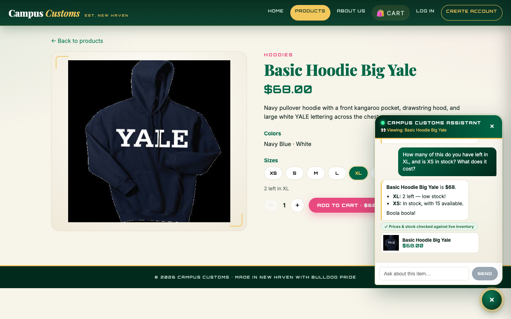
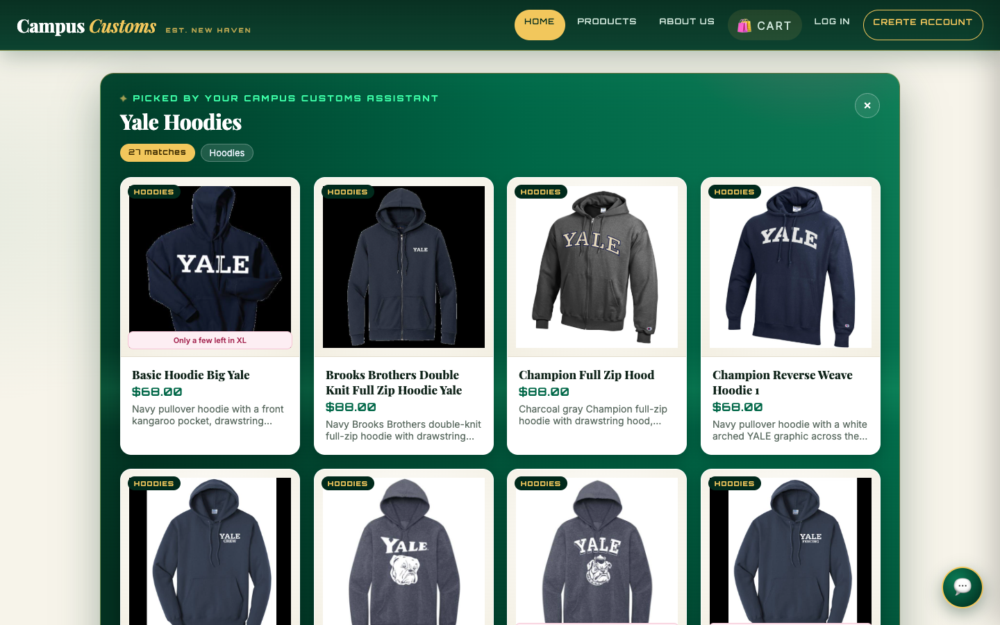
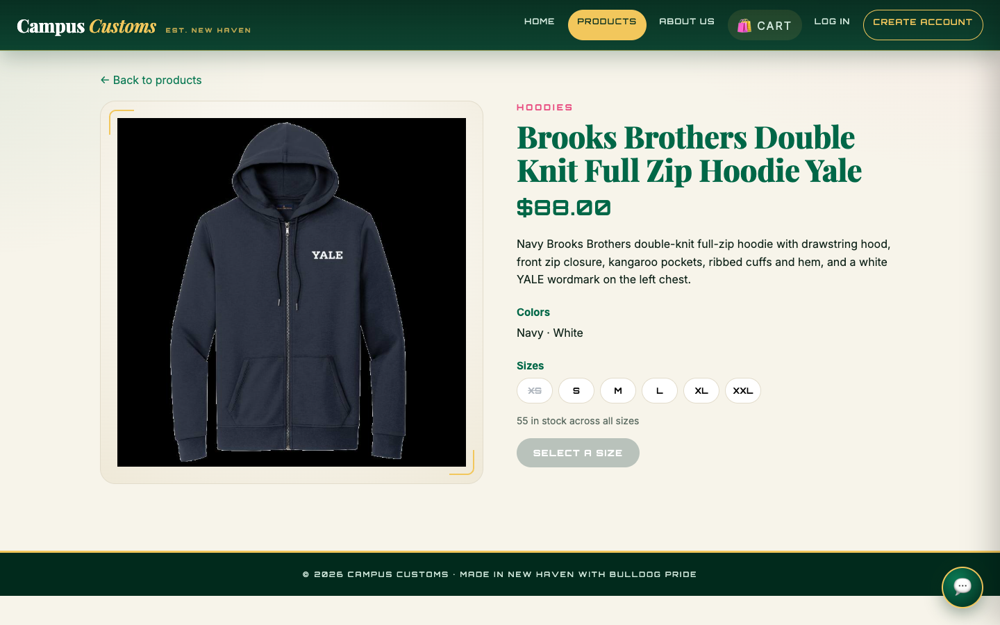
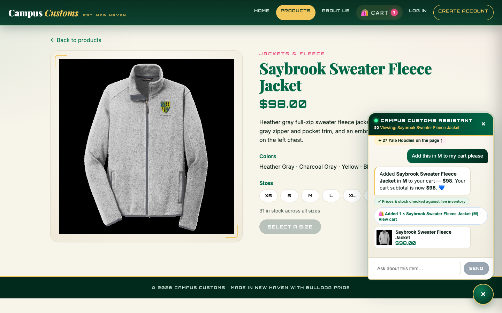
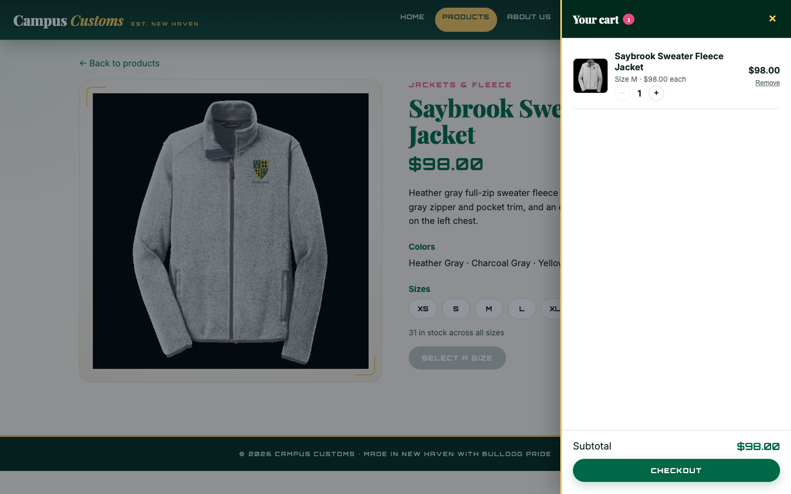
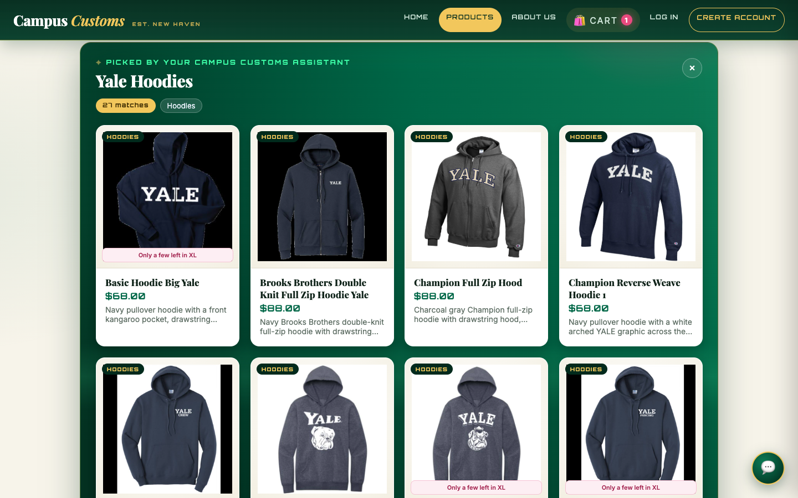
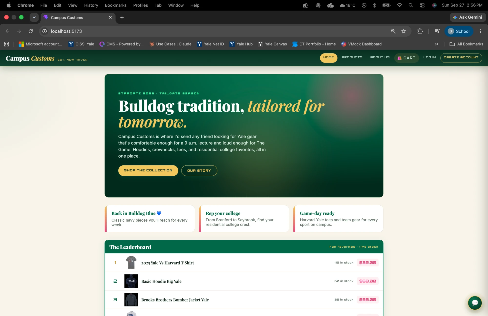
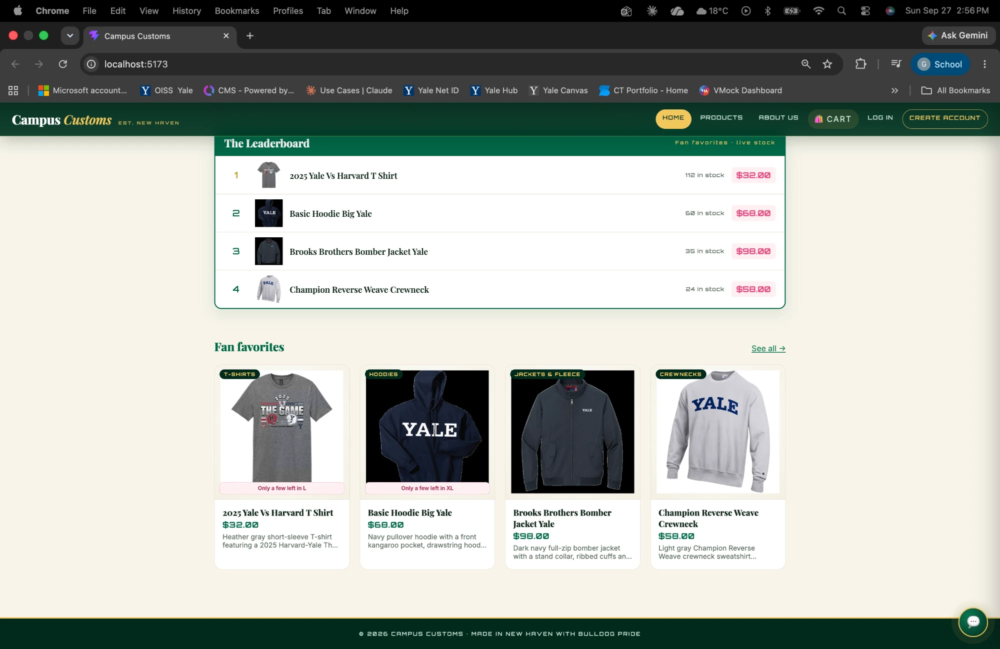
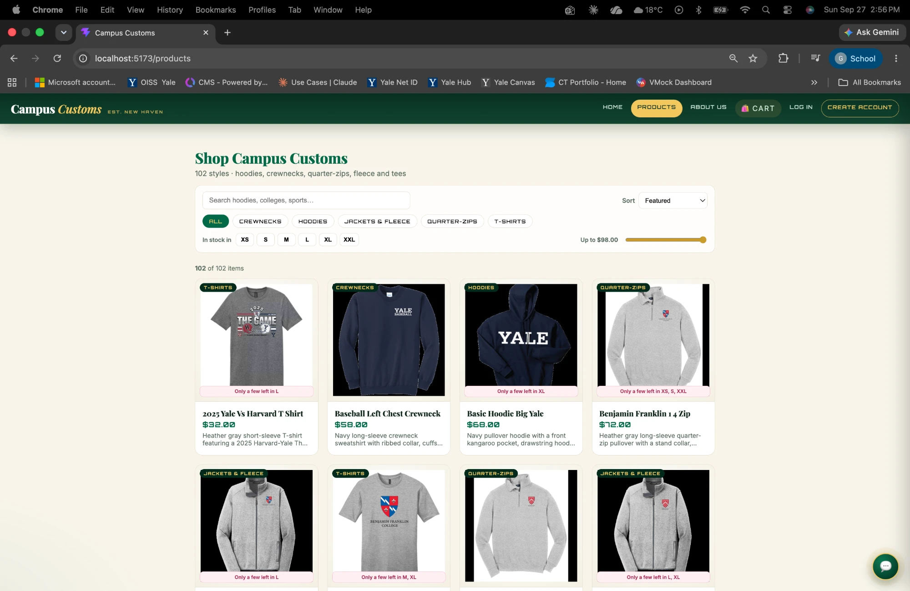
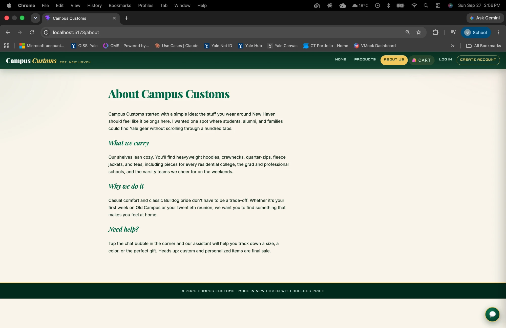

1. Chat checks an item's inventory level
Required check 1PASS
Database cross-check:
SELECT size, quantity FROM inventory WHERE product_id='basic-hoodie-big-yale' AND size IN ('XS','XL'); → XL|2, XS|15
· SELECT price FROM catalogue WHERE product_id='basic-hoodie-big-yale'; → 68.0
2. Dynamic search-result cards after a category question
Required check 2PASS
showcase (title + search filters).
The server re-runs that search on the database, and the site renders a "Yale Hoodies · 27 matches" panel of product cards (image, name, price, short description, stock badge).
The count matches the database's 27 hoodies, so the cards are real catalogue items and not model output.

/products/brooks-brothers-double-knit-full-zip-hoodie-yale), with a large image on one side and full details, price and sizes on the other.
So cards added by the chat keep the same click-through behavior as the regular Products page.
3. Problem 9 usability feature: the assistant adds to a real cart
Required check 3PASS
add_to_cart tool.
The reply confirms $98 · subtotal $98, shows a "🛍 Added 1 × … (M) · View cart" link, and the nav cart badge updates.


?cat=Hoodies&size=M&max=70&sort=price-asc loads with 19 of 102 items (hoodies in stock in M, ≤ $70, cheapest first).
That matches the equivalent SQL query exactly (19).
Extra: site tour (screenshots from the shopper's Chrome)
Context



How these were captured
| Screenshot | Source |
|---|---|
| inventory, showcase, showcase_detail, cart_chat, cart_drawer, products_filters (.png) | Captured automatically from the live site: headless Chrome (1440×900) typed into the real chat widget and clicked the real UI, with the live agent answering. The raw replies are saved in app_check_images/capture_log.json. |
| user_home, user_leaderboard, user_products, user_about (.webp) | Provided by the student from their own Chrome session. |